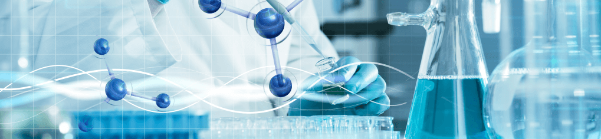

专注高端实验产品研发 崛起化学试剂"小巨头"
2018-11-7文/张丽
【中国化工仪器网名企动态】导读：年产值超25亿元，年产能8万吨，经营1万多种化学试剂品种……从汕头市金平区走出的西陇科学股份有限公司（以下简称“西陇科学”），2011年成为国内首家试剂上市公司，目前是国内规模最大、综合配套能力最强的化学试剂集成供应商。创新驱动触发“蝶变”，西陇科学将低附加值的化学试剂生产外包，将企业的主要力量放在高端产品研发上，发力供给侧，走出特有的“西陇”模式，成为媲美世界水平的化学试剂行业“小巨头”。

引进人才？？团队研发提供“原动力”
高端人才引进驱动技术创新是西陇科学发展的“原动力”。“从1998年开始，我们就从国内七大化学试剂生产研发基地积极引进人才，2013年先后成立博士后工作站、院士工作站，我们的研发人员有180余名，拥有发明及授权专利50多项，每年将销售收入的6%作为技术创新、技术改造投入已经持续10多年。”西陇科学董事长黄伟鹏说。
西陇科学从最初注重个人研发，到后来注重团队研发。2016年，西陇科学引入的创新创业团队获得汕头市委、市政府200万元奖励。据介绍，该项目属于电子化学品超净高纯试剂领域的技术攻关，以达到电子化学品用超净高纯试剂的要求，并形成国内需要的超净高纯试剂共性和关键技术及其产业化。
加大投入？？技术创新打破国际壁垒
“在化学领域，十万分之一到百万分之一的差别都会带来不同的效应，在技术上精益求精并加大投入，让企业尝到了甜头。”黄伟鹏说。
从最简单的普通试剂生产到“对标”高品质德国产品，西陇科学在技术创新上打破国际壁垒。以色谱高纯乙腈为例，目前国内许多化工企业已能达到与国际比肩的纯度值，但用户体验一直无法超越国外产品。为了攻克这个难题，经过与天津大学的联合研究，西陇科学才发现，原来是乙腈200纳米处的吸光度与国际上相差了0.01。经过3年技术改造，西陇科学最终研发出能够比肩德国默克质量的产品，并成功占领国内市场。
“互联网 ”？？电商运营沉淀大数据
黄伟鹏介绍，西陇科学则通过电子商务模式创新，进一步打通消费与供给，实现供需的精准匹配。
西陇科学控股子公司有料信息科技（上海）有限公司建设的化工原料电子商务平台“有料网”于2015年9月1日上线运营，它是中国领先的化工行业B2B交互平台，通过与化工原料生产厂家、化工原料应用厂家、大型化工贸易商的合作，将传统的大宗化工商品进行资源整合、在线交易，大大提高了交易效率并且降低了交易成本。同时，西陇科学控股子公司上海西陇生化科技有限公司建设的实验室产品电子商务平台“毛博士实验室”于2015年12月12日正式上线运营。
黄伟鹏表示，“触网”是为了适应当前科研项目快速发展的潮流与化学试剂行业的电商化趋势，不仅能够将传统的大宗化工商品进行资源整合、在线交易，大大提高了交易效率，降低了交易成本，同时能够为实验室客户提供便捷、高效、专业的产品与服务。
加速蝶变？？向“大健康”领域延伸
2014年开始，西陇科学通过并购进入诊断试剂领域，2015年又相继进入诊断试剂的高端领域基因测序领域和医疗器械高值耗材领域，通过资本市场的收购、兼并，不断向“大健康”领域延伸。
“我们利用自有资金入股美国Fulgent公司，与美国CLIA及CAP认证的临床分子诊断标准化基因检测服务机构合作，公司发展战略已由化学试剂集成供应商向科学服务供应商转变。”黄伟鹏说。
而旗下控股子公司自主研发的总抗氧化状态（TAS）检测试剂盒（FRAP法），是目前国内企业唯一获得药监局批准的用于临床检验人体内总抗氧化综合能力的检测试剂，主要用于健康体检筛查、临床辅助诊断，是疗效监测和预后判断的一项新指标。
“未来，我们将坚持‘化工’和‘医疗健康’双主业驱动发展，并不断将重心转移至医疗服务，逐步涉足健康体检、临床辅助诊断、基因测试等领域。”黄伟鹏说。